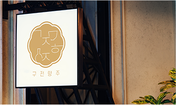
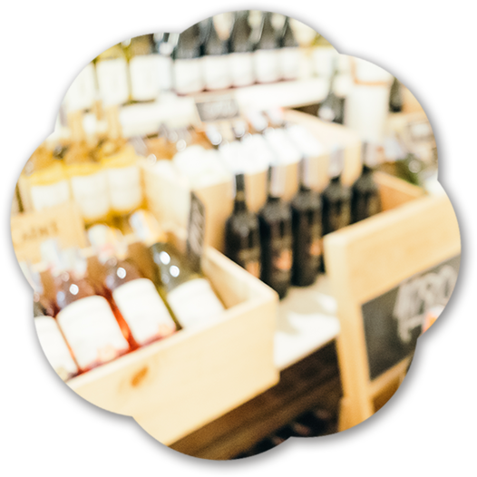

- 
 구전향주 경주 황리단길점
구전향주 경주 황리단길점- 경북 경주시 포석로1050번길 29
- 매일 오후 4시 ~ 오전 1시
- 070-0913-0808
오직 구전향주 오프라인 매장에서만 만나볼 수 있는 향주 표 칵테일
구전향주 시그니처 호접 칵테일과 매달 달라지는 이벤트 칵테일로 다양한 전통주를 만나보세요.
전통주가 처음이라도 괜찮아요.
바 테이블에 있는 종을 울려주시면 향주들이 손님에게 어울리는 전통주를 추천해 드릴 거예요.
새로운 경험을 원한다면 커스텀 칵테일을 주문해도 좋아요.
구전향주를 찾아와 주시는 여러분의 좋은 시간, 좋은 추억을 위해
늘 최선을 다할게요.

매장 1층에서 원하는 전통주를 골라 바로 마셔볼 수 있어요.
고민이 된다면 맛보기도 가능하답니다.
그날의 기분에 따라 바로 골라마실 수 있는 구전향주
오프라인 매장으로 여러분을 초대할게요.
바다가 보이는 루프탑에서 전통주를 즐길 수 있는
구전향주 광안리점으로 여러분을 초대합니다.
오직 광안리점에서만 만나 볼 수있는 푸른 바다 일과
부산만의 매력이 가득 담긴 해산물 한상를 즐겨보세요.